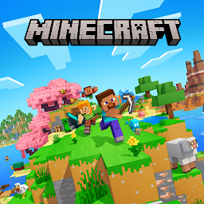
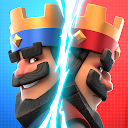
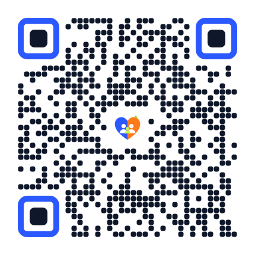

Apresentação de Projeto A3
Guardian
Monitoramento parental
Mais equilíbrio no tempo de jogo. Mais diálogo em família.




Tela inicial da criança no Guardian
Projeto A3 · Guardian
O problema: tempo de jogo sem equilíbrio.
Pesquisa com adolescentes de escolas públicas brasileiras.
relataram jogar videogame
preencheram critérios de uso problemático
Desafios para a família
- Cada plataforma tem regras próprias.
- Nem sempre é fácil medir o uso.
- Excesso pode afetar a rotina e o diálogo.
Fonte dos percentuais: Jornal da USP (2022). Resultados da amostra estudada, não de toda a população.
Projeto A3 · Guardian
Para quem estamos criando?
Pais e responsáveis
Definem limites, acompanham relatórios e fazem ajustes conforme a rotina familiar.
Crianças e adolescentes
Veem o tempo disponível e recebem avisos claros quando o limite é alcançado.
A família
Ganha uma referência compartilhada para combinar horários e conversar sobre hábitos.
Projeto A3 · Guardian
Como o Guardian resolve o problema.
- 1
Configurar
O responsável escolhe os aplicativos e define limites diários.
- 2
Acompanhar
O sistema registra o uso e apresenta informações do dia e da semana.
- 3
Intervir
Ao alcançar o limite, o app sinaliza a pausa ou aplica a restrição disponível.
Tela de pausa quando o limite acaba
Projeto A3 · Guardian
Funcionalidades do MVP.
Painel do responsável
Visão dos aparelhos vinculados, uso diário e ajustes de regras.
Limite por aplicativo
Configuração de duração máxima de uso para jogos e apps.
Relatório semanal
Informações objetivas e gráficos dos últimos 7 dias.
Vínculo entre aparelhos
Pareamento por QR Code ou código de 8 caracteres no Flutter.
Status: protótipo web com simulações. App Flutter com funções implementadas e testes físicos ainda necessários.
Projeto A3 · Guardian
Tecnologias e arquitetura da solução.
Desenvolvimento com código
Android e Windows
Firestore e regras de acesso
Recursos específicos do sistema
Fonte: README e documentação técnica do Guardian.
Projeto A3 · Guardian
Inteligência artificial: uso consciente.
Apoio ao trabalho da equipe
- Pesquisa e estruturação da proposta
- Prototipação e auxílio na programação
- Documentação, revisão e testes
IA como apoio às famílias
- Síntese dos hábitos de tempo de tela
- Sugestões de atividades offline
- Recomendações sempre revisáveis
Projeto A3 · Guardian
Ética, privacidade e proteção infantil.
Coleta mínima
Tempo de uso, aplicativos monitorados e limites definidos.
Transparência
A criança deve entender quais dados são acompanhados.
Responsável e finalidade
Participação do responsável e avaliação da base legal aplicável.
Segurança e acesso
Restrição de acesso, regras no banco e validação da proteção.
Referências legais: LGPD (Lei 13.709/2018, art. 14) e ECA Digital (Lei 15.211/2025).
Momento central
Demonstração prática.
Roteiro para a banca
- 1
Abrir o aplicativo e mostrar o painel
- 2
Escolher um jogo e ajustar seu limite
- 3
Mostrar o acompanhamento de uso
- 4
Demonstrar o aviso ou bloqueio disponível
- 5
Exibir o relatório dos últimos 7 dias
Usar apenas a versão testada pela equipe e manter um vídeo de reserva.




Toque no menu do celular para trocar de tela
Projeto A3 · Guardian
Plano de trabalho e evolução do projeto.
Cronograma baseado nos marcos documentados no repositório.
Projeto A3 · Guardian
Impacto esperado e próximos passos.
- Visibilidade do tempo dedicado a jogos
- Limites ajustados à rotina de cada casa
- Mais espaço para acordos e diálogo
- Validar QR Code e bloqueio em aparelhos reais
- Testar a comunicação entre dispositivos
- Aprimorar acessibilidade e segurança
O Guardian é apoio à educação digital, não substitui o acompanhamento dos responsáveis.
Projeto A3 · 2026
Tecnologia para cuidar do tempo. Diálogo para cuidar das relações.
Obrigado! Perguntas?

Conheça o código do projeto